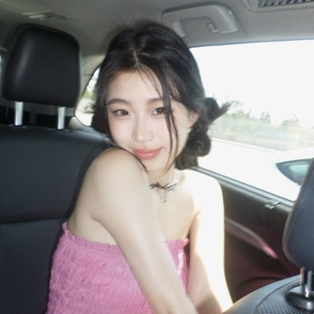

i love building startups, cooking up fun projects, skydiving, and experiencing the world.
Goal before i die: build things that change the world for the better.
我喜欢做公司、做好玩的小东西、跳伞,还有到处去看看这个世界。
死之前想干成的事:做出能让世界变好一点的东西。
it's already live! open it on your computer, click once to turn the sound on, and press R to watch it grow again.
takes ~15 seconds
已经上线了!用电脑打开,点一下屏幕就有声音,按 R 再看它长一遍。
大概 15 秒
copy my prompt into Claude or ChatGPT and ask it to build you a single HTML file.
you might need to tweak a few things depending on your setup. i documented the bugs i ran into here, so you can skip some of the trial and error.
have fun making yours :)
takes ~15 minutes
把我的 prompt 丢给 Claude 或 ChatGPT,让它给你做一个 HTML 文件。
看你的电脑,可能要调几个地方。我踩过的坑都记在这里,你可以少走点弯路。
做得开心 :)
大概 15 分钟